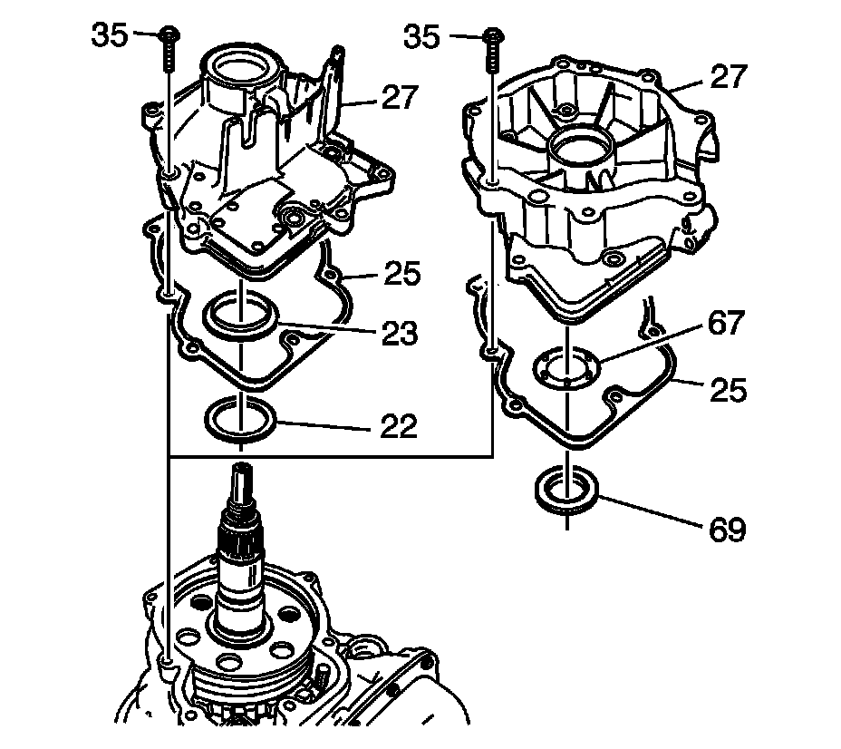

5L40-E/5L50-E - Automatic Transmission
Case Extension and Gasket Replacement
Removal Procedure

1. If equipped with 2 wheel drive (2WD), remove the drive flange (2) and seal (3). Refer to Drive Flange and Seal Replacement (Drive Flange and Seal Replacement) .
2. Place a suitable jack under the transmission pan in order to support the transmission.
3. Remove the transmission support. Refer to Transmission Support Replacement (Transmission Support Replacement) .
4. If equipped with all wheel drive (AWD), remove the transfer case. Refer to Transfer Case Assembly Replacement (Transfer Case Assembly Replacement) .
5. Place a drain pan under the extension housing.

6. Remove the extension housing bolts (35).
7. Remove the extension housing (27) and seal (25).
8. If equipped with AWD, remove the seal from the extension housing.
Installation Procedure
1. If equipped with AWD, install a NEW seal to the extension housing.
Important: The case extension gasket seal is reusable. Replace the gasket ONLY if the sealing surface is damaged.
2. Install the extension housing (27) and seal (25).
Notice: Refer to Fastener Notice (Fastener Notice) .
3. Install the extension housing bolts (35).
Tighten the bolts to 22 N.m (16 lb ft).
4. If equipped with AWD, remove the transfer case. Refer to Transfer Case Assembly Replacement (Transfer Case Assembly Replacement) .
5. Install the transmission support. Refer to Transmission Support Replacement (Transmission Support Replacement) .
6. Remove the transmission jack.
7. If equipped with 2WD, install the drive flange (2) and seal (3). Refer to Drive Flange and Seal Replacement (Drive Flange and Seal Replacement) .